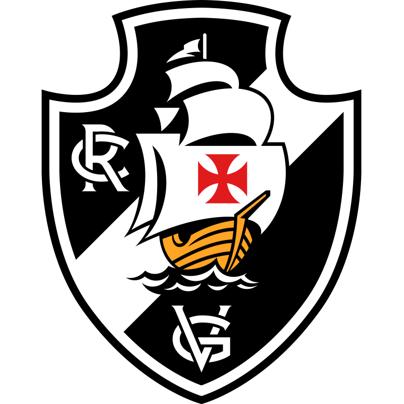

Club de Regatas Vasco da Gama (mais conhecido apenas por Vasco e cujo acrônimo é CRVG) é uma entidade sócio-poliesportiva brasileira com sede na cidade do Rio de Janeiro, fundada em 21 de agosto de 1898 por um grupo de remadores. Inspirados nas celebrações do quarto centenário da descoberta do caminho marítimo para as Índias, ocorrida em 1498, batizaram a nova agremiação com o nome do navegador português que alcançou tal feito, Vasco da Gama.
Apesar de ter sido fundado como um "clube de regatas", consagrando-se no remo como um dos maiores campeões do continente, o Vasco da Gama ainda abrange outras modalidades como atletismo, vôlei de praia, basquete, futebol de areia, dentre outros, tendo como esporte mais tradicional o futebol. As cores do Vasco guardam forte significação: o preto remete aos mares desconhecidos do Oriente, desbravados por Vasco da Gama, enquanto o branco da faixa diagonal refere-se à rota descoberta pelo almirante. Além disso, estas são cores que se encaixam na ideia de uma comunhão de etnias (já que foi o primeiro clube do Brasil a lutar contra preconceitos raciais e sociais), tendo sido o primeiro na história dos clubes esportivos do Brasil a ter elegido um presidente "não branco" (em 1904, numa época em que o racismo contra negros era prática comum no esporte, os vascaínos tiveram a honra de conduzir o mulato Cândido José de Araújo ao degrau mais alto do clube). A Cruz, principal símbolo, tem forte aspecto religioso, porque a Ordem Militar de Cristo era ao mesmo tempo religiosa e guerreira.
O cruzmaltino é bicampeão em torneios intercontinentais de futebol de grande importância histórica (1953 e 1957). Em 1953, o Vasco venceu o Torneio Octogonal Rivadávia Corrêa Meyer, competição oficial da CBD, organizada com o apoio do dirigente da FIFA, Ottorino Barassi, competição sucessora da Copa Rio Internacional, tratada na Europa como uma edição da Copa Rio e almejada pelos 4 grandes clubes cariocas. No Torneio de Paris de 1957, o Vasco entrou para a História como o primeiro e único clube não europeu a derrotar um campeão da Copa dos Campeões da UEFA desde o primeiro título desta competição europeia (vencido pelo Real Madrid em 13 de junho de 1956) até a 1ª disputa da Copa Intercontinental (em 3 de julho de 1960),com a final do Torneio de Paris de 1957 sendo considerada pela imprensa francesa como a final entre o campeão europeu e a equipe considerada a melhor da América do Sul, em uma apresentação que encantou o público e a imprensa francesa, prestigiando o Vasco e o futebol brasileiro frente ao público europeu e mundial.
Em âmbito continental, o clube é bicampeão sul-americano, tendo vencido a única competição reconhecida pela CONMEBOL como precursora da Copa Libertadores da América, o Campeonato Sul-Americano de Campeões de 1948, em status equivalente ao da Libertadores, tendo o Vasco participado em 1997 da Supercopa dos Campeões da Libertadores (competição reservada aos campeões da Libertadores) em função do título de 1948; e a Copa Libertadores da América de 1998 (conquistada no ano do centenário). Ainda em títulos sul-americanos, o Vasco venceria a Copa Mercosul no ano 2000, com uma vitória de 4x3 sobre o Palmeiras, em jogo que ficou conhecido como A Virada do Século, considerada uma das maiores partidas da história do futebol.
Em títulos nacionais, o Vasco conquistou quatro Campeonatos Brasileiros em 1974, 1989, 1997 e 2000, uma Copa do Brasil em 2011, diversos títulos estaduais oficiais (diversos campeonatos Carioca, da Copa Rio, e torneios Municipal, Extra, Início e Relâmpago) e cinco títulos interestaduais oficiais (três Torneio Rio-São Paulo, uma Taça dos Campeões Estaduais Rio-São Paulo e um Torneio João Havelange). Conquistou ainda diversos torneios nacionais e internacionais.
O Vasco da Gama ainda tem, dentre o seu plantel de ídolos, os maiores artilheiros do Campeonato Brasileiro de todos os tempos, tendo como Roberto Dinamite, o maior, com a marca de 190 gols, seguido por Romário e Edmundo, com 154 e 153 gols respectivamente. O primeiro grande ídolo do clube foi o atacante Ademir de Menezes, que liderou o memorável "Expresso da Vitória", tornando-se o maior artilheiro do Vasco com 301 gols marcados, número só superado por Dinamite e Romário décadas mais tarde.
Segundo pesquisa realizada pelo instituto Datafolha a pedido da Folha de S.Paulo em 2019, o Vasco possui a quinta maior torcida do Brasil, com 4,0% dos entrevistados com margem de erro de 2,0 p.p., empatado tecnicamente na quarta colocação com o Palmeiras.
No dia 2 de julho de 2007, o então governador do Rio de Janeiro, Sérgio Cabral Filho, sancionou o projeto de lei nº 5.052, que criou o Dia do Vasco, data comemorativa que homenageia a fundação do clube.
Desde 2017, o Vasco pode utilizar antes do seu nome a palavra Real, “Real Club de Regatas Vasco da Gama”, através do Decreto de Alvará Régio do Chefe da Casa Real Portuguesa, Dom Duarte Pio de Bragança (Duque de Bragança), que renovou e conferiu o Patronato Régio ao Vasco da Gama. O título real seria concedido ao clube no ano de 1908, na sua primeira década de existência, por ocasião da visita do Rei de Portugal Dom Carlos I ao Brasil, que já havia deliberado pela renovação e conferimento do título de “Real Sociedade”, que já gozava o Vasco durante o período em que Dom Luís I esteve como Rei de Portugal, mas acabou impedido pelo regicídio de 1 de fevereiro de 1908.
HISTÓRIA
O Vasco foi fundado como um clube de remo em 1898, por um grupo de 63 rapazes, imigrantes portugueses e luso-descendentes, reunidos no bairro da Saúde. O nome escolhido foi Club de Regatas Vasco da Gama, pois naquele ano eram comemorados os 400 anos da viagem do célebre almirante à Índia. Já filiado à União de Regatas, a estreia do Vasco em competições oficiais ocorreu a 4 de junho de 1899, na enseada de Botafogo. Ali, a baleeira "Volúvel", de seis remos, venceu o primeiro páreo na categoria júnior, a primeira vitória do Vasco no remo. Em 24 de novembro de 1905, o clube conquistou o primeiro Campeonato Carioca de Remo, numa competição que contou com o presidente Rodrigues Alves entre os assistentes. Já no ano seguinte, o Vasco sagrou-se bicampeão. Até 2012, o clube venceu o campeonato de remo um total de 46 vezes.
Em novembro de 1915, o clube de futebol Lusitânia foi incorporado ao Vasco, dando origem ao departamento de futebol do Vasco da Gama, apesar da oposição dos remadores vascaínos. O Vasco estreou a 3 de maio de 1916, na terceira divisão, perdendo por 10 a 1 contra o Paladino Foot-Ball Club.
O clube incorporava aos seus quadros jogadores de qualquer origem étnica, com a condição que soubessem jogar futebol. Em 1922, o Vasco conseguiu o primeiro título ao ganhar a série B da Primeira Divisão, o que lhe abriu a possibilidade de jogar na Primeira Divisão da Liga Metropolitana de Desportos Terrestres (LMDT). A campanha do clube foi excelente, com onze vitórias, dois empates e uma derrota, sagrando-se assim campeão do Campeonato Carioca de Futebol de 1923 no seu ano de estreia.[39] O time vascaíno era composto por jogadores de várias origens, como negros, mulatos, portugueses e brancos pobres da classe operária. Apesar de haver outros times com jogadores destas características (por exemplo o Bangu), essa era a primeira vez que os times mais elitistas da cidade eram incomodados por um time da periferia.
O Vasco venceu o América e o Fluminense, conquistando o campeonato, em seu ano de estreia na primeira divisão, no dia 12 de agosto de 1923, deixando o Clube de Regatas Flamengo, na segunda colocação, o que acabou marcando significativamente a história do clube, do Rio de Janeiro e do Brasil, por ser o primeiro do Clube em uma campanha com integrantes afrodescendentes, pobres e operários a ser campeão. Rui Proença, português de nascimento e radicado no Rio, identifica o fato como uma verdadeira revolução, enfatizando os preconceitos e dificuldades inicialmente encontrados pelo Vasco, associando-se ao fato de o Flamengo, o Fluminense e o Botafogo não permitirem a entrada de negros em seus clubes. O autor conclui que o clube representaria o congraçamento entre negros e portugueses, grupos discriminados que, unidos, fizeram o Vasco.
Após a tentativa fracassada de ver o Vasco da Gama fora da competição em 1923, os clubes da zona sul (área de elite da cidade do Rio de Janeiro), Botafogo, Flamengo, Fluminense e alguns outros clubes encontraram a solução para se verem livres dos vascaínos no ano seguinte. Assim, se uniram, abandonaram a Liga Metropolitana de Desportos Terrestres (LMDT) e fundaram a Associação Metropolitana de Esportes Atléticos (AMEA), deixando de fora o Vasco, que só poderia se filiar à nova entidade caso dispensasse doze de seus atletas (todos negros) sob a acusação de que teriam "profissão duvidosa". Diante da situação imposta, em 1924, o presidente do Club de Regatas Vasco da Gama, José Augusto Prestes, enviou uma carta à AMEA, que veio a ser conhecida como a "Resposta Histórica", recusando-se a se submeter à condição imposta e desistindo de filiar-se à AMEA. A carta entrou para a história como marco da luta contra o racismo no futebol.
Desta forma em 1924 foram disputados dois campeonatos em paralelo, sendo o da LMDT vencido de forma invicta pelo Vasco, conquistando assim o bicampeonato estadual. No ano seguinte, o clube venceu as resistências da AMEA, conseguiu integrar-se à entidade e voltou a disputar o campeonato contra os grandes times sob a condição de disputar seus jogos no campo do Andarahy. Apesar disso, o Vasco decidiu construir o seu próprio estádio, para acabar com qualquer exigência. O local escolhido para a construção foi a chácara de São Januário, que fora um presente de Dom Pedro I à Marquesa de Santos. Em 21 de abril de 1927, o Vasco da Gama inaugurava o Estádio de São Januário e até 1930, quando da inauguração do Estádio Centenário em Montevidéu (para a primeira Copa do Mundo), era o maior das Américas. Até 1940, quando da inauguração do Pacaembu em São Paulo, o estádio era o maior do Brasil, e até 1950, na inauguração do Maracanã, era o maior do Rio de Janeiro. O estádio foi construído em dez meses e com dinheiro arrecadado através da 'Campanha dos dez mil' que recebia donativos de torcedores de toda a cidade. Dois anos depois seria inaugurada a sua iluminação, passando a ser o único clube do país com um estádio em condições de sediar jogos noturnos.
Em 1929 além do Torneio Início, o Vasco ganha seu terceiro Campeonato Carioca de Futebol em 7 anos de elite. Em 1931, o Vasco se tornou o segundo clube brasileiro a ser convidado para uma excursão internacional, depois do Paulistano. Neste mesmo ano, o Vasco aplicou uma goleada histórica de 7 a 0 no seu arquirrival Flamengo, sendo esta, a maior goleada entre as duas equipes em todos os tempos.
Em 1934, contando com craques como Leônidas da Silva, Domingos da Guia, Russinho, Fausto e outros, o Gigante da Colina conquistou o Campeonato Carioca, sendo que naquele ano o campeonato foi disputado em duas ligas. O Vasco, assim, ganhou o direito de disputar a Taça dos Campeões Estaduais, que era a disputa interestadual envolvendo os campeões do Rio de Janeiro e São Paulo, empatando na final com o Palestra Itália. Ainda neste ano, o Vasco ingressa na Confederação Brasileira de Desportos após esta aceitar o regime profissional e ainda em 1934 o Vasco da Gama seria campeão estadual de remo, tendo adquirido o título de Campeão de Terra e Mar de 1934.
Após a conquista do Torneio Luís Aranha, em 1940, e novamente de um Torneio Início, em 1942, veio a formação de um grande e temido time: o "Expresso da Vitória", liderado pelo atacante Ademir de Menezes. Em 1944 venceu o Torneio Relâmpago, superando os outros quatro grandes da época (Flamengo, Fluminense, Botafogo e América) e aplicando uma goleada de 5 a 2 na última rodada sobre seu futuro rival, o Flamengo. Em seguida, ganhou o Torneio Municipal, contra os mesmo clubes e outros do Rio de Janeiro, empatando com o Flamengo na última rodada e se sagrando campeão. Voltando a vencer este mesmo Torneio nos três anos seguintes, se tornando o único tetracampeão da competição carioca, vencendo ainda dois títulos cariocas invictos, em 1945 e 1947. Este último rendeu ao clube o convite para disputar o Campeonato Sul-Americano de Campeões, competição precursora da Copa Libertadores da América e reconhecida pela CONMEBOL como de igual valor em 1996/1997 e 2013.Após a conquista continental em Santiago do Chile, no dia 18 de março de 1948, mais de 200 mil pessoas, cerca de 10% de toda a população do Rio de Janeiro à época, tomaram as ruas da cidade para recepcionar de forma apoteótica a chegada dos "Campeões dos Campeões do continente".